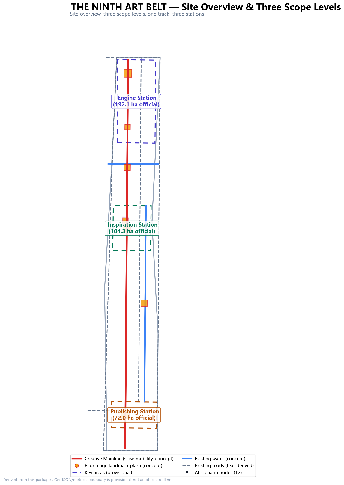
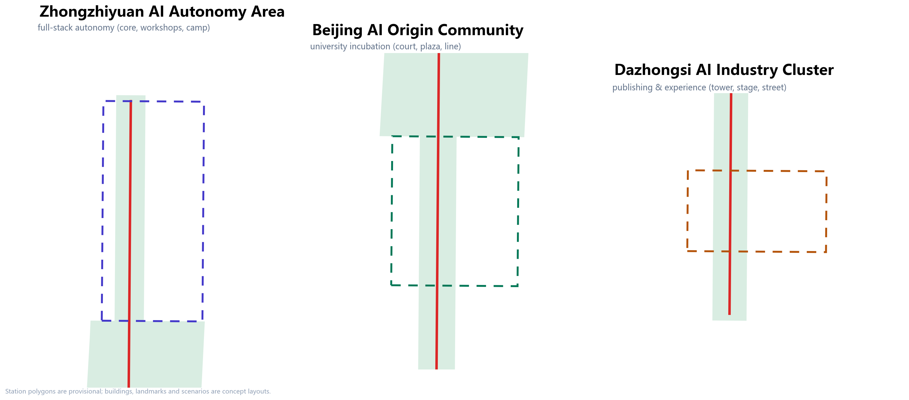
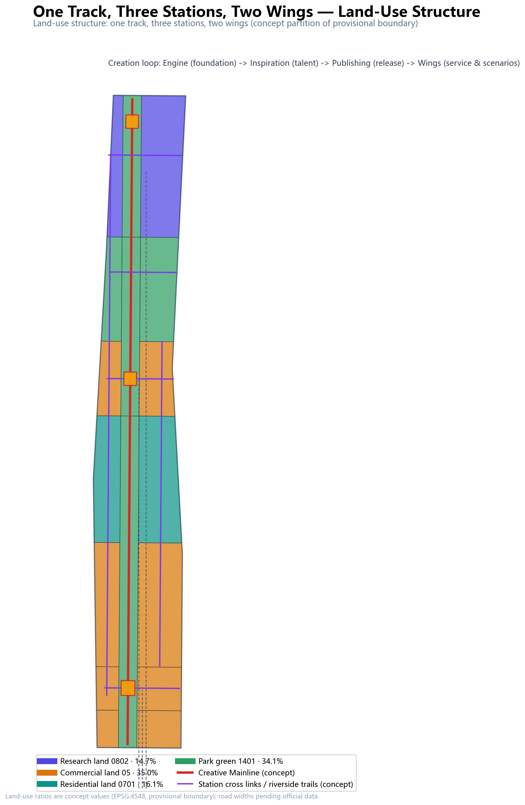
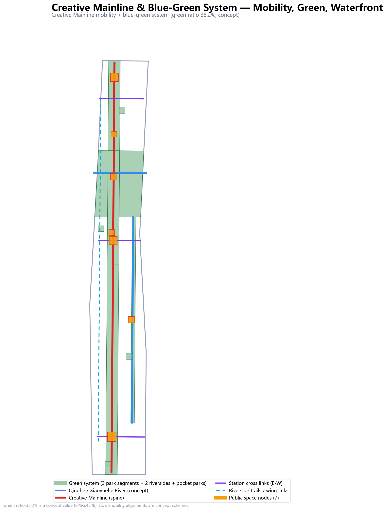
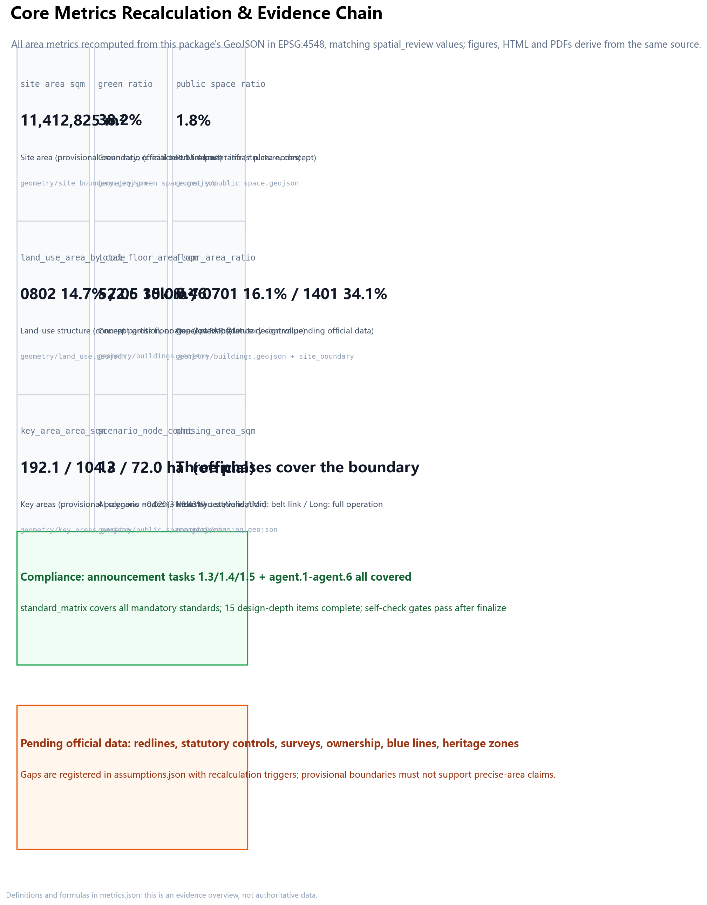

Overview Map three scope levels, creative mainline, three stations, locked constraints

Overview: coordinated research area 43.6 km2 (official text) · overall design area 11,412,825.39 m2 (provisional boundary, EPSG:4548; official text 11.4 km2) · key areas 368.4 ha (three stations). Qinghe/Xiaoyuehe are concept locations; existing roads are text-derived.
Three Scope Levels
Coordinated research area · 43.6 km2
Establishes the AI content industry as an AI+ vertical within Haidian's "1+X+1" system; organizes the three-area-two-wing synergy loop with global case references.
Overall design area · 11.4 km2
"Three-station renewal + two-wing weaving" framework; all design layers generated inside the provisional boundary with no gaps or overlaps.
Key areas · 368.4 ha
Zhongzhiyuan 192.1 ha (Engine) · Origin Community 104.3 ha (Inspiration) · Dazhongsi 72.0 ha (Publishing).
Key Areas — Three Stations detailed design index

Engine Station · Zhongzhiyuan
Core + workshops + camp: compute/model/chip core, garden R&D workshops, Qinghe riverside creation camp.
Inspiration Station · Origin Community
Courtyards + plaza + line: incubation courtyards, Gate of the Ninth Art, Wudaokou station-area slow line.
Publishing Station · Dazhongsi
Tower + stage + street: AI Creation Tower, virtual-production stage, intelligent-terminal street; four-quadrant pedestrian link (concept).
Land-Use Structure concept partition of the provisional boundary

| Code | Share (concept) | Design meaning |
|---|---|---|
| 0802 Research land | 14.7% | Full-stack autonomy engine: compute, models, chips, creation tools |
| 05 Commercial land | 35.0% | Incubation, publishing, experience — three asset-light content businesses |
| 0701 Residential land | 16.1% | Live-work talent communities |
| 1401 Park green | 34.1% | Creation-environment infrastructure: public supply of attention and emotion |
Mobility & Slow Traffic

One mainline + three cross links + two riversides: the Creative Mainline (9.6 km concept alignment) links the three park segments; the station cross links run east-west; Qinghe and Xiaoyuehe riverside trails close the waterfront loop. Road area ratio 0.0405 (concept; half-width assumptions in metrics.json).
Blue-Green & Public Space
Green ratio 38.2% (concept) · public space ratio 1.8% (7 plaza nodes).
Engine Sanctum (concept)
Zhongzhiyuan · Engine Plaza — honours AI infrastructure builders; the honour gallery records self-reliance milestones.
Gate of the Ninth Art (concept)
Origin Community · Inspiration Plaza — a pixel-matrix interactive arch; passing through means entering the creation zone.
AI Creation Tower (concept)
Dazhongsi · Publishing Plaza — the first-release lighthouse for global AI works; the "AI Bell" tolls at major releases.
The Tsinghua station memorial anchors the "creation pilgrimage route" together with the three landmarks. All landmarks are concept suggestions, unapproved.
Buildings & Renewal Projects
Concept building footprints 803,788.00 m2, concept gross floor area 5,226,062 m2, concept FAR 0.4579, concept building density 7.0% — low-confidence design values, not statutory controls.
Renewal project list (concept)
Engine Station unit · Inspiration Station unit · Publishing Station unit · two-wing weaving units (IP/copyright centre, Xiaoyuehe scenario trail) · park linkage unit.
Three-phase implementation
Near 2026–2028 two-station opening → Mid 2028–2031 belt connection → Long 2031–2035 full-belt operation (phasing.geojson covers the boundary).
AI Scenarios twelve scenario cards
01 AI virtual production workshop experience
Location: Engine Station · Engine Plaza
Privacy / review: Portrait use requires separate consent
02 Tidal compute scheduling showcase industry test
Location: Engine Station · compute centre
Privacy / review: No personal data; schedule is public
03 AI engine open test field industry test
Location: Engine Station · garden R&D
Privacy / review: Test data released only de-identified
04 Qinghe eco narrative trail experience
Location: Qinghe creation camp
Privacy / review: Location data processed locally only
05 Jing-Zhang railway immersive drama experience
Location: Tsinghua station memorial
Privacy / review: Historical narrative verified by historians
06 AI game-jam camp experience
Location: Inspiration Station courtyards
Privacy / review: Works remain the authors' property
07 Xiaoyuehe agent-NPC street experience
Location: Xiaoyuehe scenario trail
Privacy / review: Interaction traces deletable
08 AI copyright registration field industry test
Location: Tech-Service Wing · copyright centre
Privacy / review: Registered content encrypted
09 AI works global release hall experience
Location: Publishing Station · Creation Tower
Privacy / review: Platform moderation of releases
10 Intelligent terminal experience street experience
Location: Publishing Station · experience street
Privacy / review: Trial-data collection disclosed
11 AI educational game centre experience
Location: South Gateway · experience hall
Privacy / review: Separate protection for minors
12 Accessible creation workshop experience
Location: Tech-Service Wing
Privacy / review: Accessibility reviewed throughout
Cards 02 / 03 / 08 are industry test/validation scenarios (satisfying the taskbook's minimum of three). All scenarios are concept suggestions, unapproved for operation.
Core Metrics recomputed in EPSG:4548

| Metric | Value | Status | Meaning |
|---|---|---|---|
| site_area_sqm | 11,412,825.39 | known | Provisional boundary recomputation |
| green_ratio | 0.381984 | known | Green ratio (concept) |
| public_space_ratio | 0.01795 | known | Public space ratio (plaza level) |
| total_floor_area_sqm | 5,226,062 | known | Concept gross floor area (low confidence) |
| floor_area_ratio | 0.4579 | known | Concept FAR (statutory control pending) |
| building_density | 0.0704 | known | Concept building density |
| road_area_ratio | 0.0405 | known | Road area ratio (concept) |
| scenario_node_count | 12 | known | AI scenario nodes (3 industry tests) |
| pilgrimage_landmark_count | 3 | known | AI pilgrimage landmarks (concept) |
Task Coverage
compliance_matrix.json covers all announcement tasks 1.3 / 1.4 / 1.5 and agent.1–agent.6; standard_matrix.json covers all mandatory professional standards; all 15 required design-depth items are complete.
Agent task placement: overall concept and naming (agent.1) → global cases and ecosystem map (agent.2) → 12 scenario cards and 5 personas (agent.3) → 3 pilgrimage landmarks and public space (agent.4) → "A Century of Jing-Zhang, One Continuous Act of Creation" cultural narrative (agent.5) → annual activities and long-term operation (agent.6).
Self-Check Status
Sources
Full registry in sources.json; all materials are public or cleared — no non-public data used.
Assumptions
| ID | Content |
|---|---|
| A-CONTROLS-001 | Statutory controls absent from the public package; volumes/intensities are concept design values |
| A-BOUNDARY-001 | Boundary and key areas are provisional; full regeneration when official redlines arrive |
| A-WATER-001 / A-ROADS-001 | Qinghe/Xiaoyuehe and existing roads are text-derived approximations |
| A-BUILDINGS-001 | Building footprints are concept designs, not existing-condition surveys |
| A-HERITAGE-001 | Heritage protection zones follow heritage-authority publications |
| A-CASES-001 | Global cases are public reports; no investment or policy commitments implied |